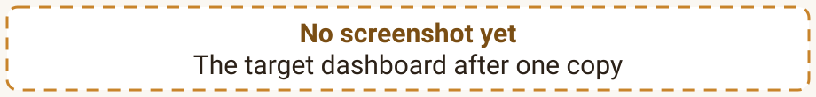
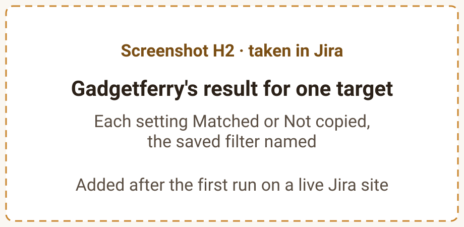
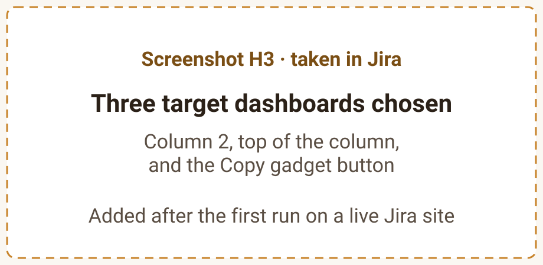

Gadgetferry – Copy Gadgets Between Dashboards for Jira
“Is it possible to copy a gadget from one dashboard to another?” Jira has no action for it. Gadgetferry adds the gadget to dashboards that already have gadgets, and shows what arrived.

- “Being able to copy/duplicate a gadget over to another dashboard.” Pick the gadget, a dashboard you can edit and a column, and press Copy gadget.
- “The dashboard … already has several gadgets.” They stay. One gadget can go onto up to 20 dashboards in one run.
- A gadget with “a large number of ‘Custom counts’”. Its settings are read back after the copy, each Matched or Not copied with Jira's reason. Undo this copy removes only what the run added.
Free for up to 10 users. From 11 users, $0.15 per user per month.
Get it on the Atlassian Marketplace
Atlassian Marketplace listing in review. Not installable yet: Gadgetferry has not yet run on a live Jira site, and it can be installed only from the listing.
Jira Cloud only · version 1.0.1 · 142 automated tests pass outside Jira (what is and is not tested) · source not included (commercial app) · support: support@ochrestack.com
Billed monthly or annually (a year costs ten times the monthly price): 15 users cost $2.25 a month or $22.50 a year. One edition, every feature in every tier. Atlassian bills the renewal, sends the renewal notice and handles refunds within 30 days.
How it works
![Diagram in three steps. One: you choose a gadget on a dashboard you can view, and see its title, type, column and row and its settings listed by name. Two: Gadgetferry adds it to up to 20 dashboards you can edit, in the column you choose, and the gadgets already there stay. Three: it reads the copy back, each setting Matched or Not copied with the reason, and you open the copy to check it or press Undo this copy. It runs from Apps, Gadgetferry, with your own Jira permissions, and nothing leaves Atlassian.](workflow.svg)
- Choose a gadget on a dashboard you can view; its settings are listed by name.
- Copy. Gadgetferry adds it to up to 20 dashboards you can edit; the gadgets already there stay.
- Check or undo. Each setting is read back as Matched or Not copied; open the copy to check it, or press Undo this copy.
What it does
- Copies the gadget's type, title and colour and the settings Jira returns for it. For Jira's own gadgets it also asks Jira for the usual setting names one by one, because Jira's list can be incomplete; those are marked “found by name”.
- Shows what arrived, and names the saved filter: viewers of the target dashboard see the gadget only if that filter is shared with them. Matched means the value Jira returned for the source reads back the same on the copy. It does not prove the gadget is configured, so open each copy and look.
- Says why when Jira refuses, naming Jira's rule and the way round it, Jira admins included. Your last 20 runs are listed.


What you do not get
- Settings Jira does not keep or return. Some app gadgets keep their settings with their vendor; Gadgetferry says before copying that such a gadget will arrive unconfigured. Whether a given gadget type arrives configured has not yet been shown on a live Jira site: open each copy and check it.
- Dashboards you cannot edit as targets. That is Jira's rule, and it holds for Jira admins too.
- A copy of the saved filter. The copy uses the same one.
- Moving, syncing or copying between Jira sites. Jira Cloud only, English only, not Jira Data Center.
- Speed on large sites. Each dashboard is copied in one step that must finish within Atlassian's 25-second limit; with thousands of dashboards the target list offers Show more dashboards.
If Atlassian adds a copy-to-another-dashboard action to Jira, Gadgetferry is then worth its extras: several dashboards at once, the read-back and Undo.
How we tested
142 automated tests pass on version 1.0.1 (Linux, Node 22) against a model of Jira's published REST operations, built from Atlassian's documentation and public reports; it can be wrong where real Jira differs.
Not yet done: a run on a live Jira site (install, gadgets arriving configured, the allow-access prompt, the target list on a big site), the Forge command-line tool's own lint check and deploy, and the Runs on Atlassian check; we had no Atlassian login in the build environment. The tests ran on Linux, not on Windows or macOS. That Jira has no cross-dashboard copy rests on public Atlassian pages (Atlassian Community threads, Jira ticket JRACLOUD-18207). Screenshots from inside Jira follow the first live run. Quick start.
Privacy, access and support
Gadgetferry sends nothing outside Atlassian and has no analytics or tracking. It acts as you, with your own Jira permissions: copying needs edit access to the target dashboard, not an admin role. It asks for 18 permissions: dashboards, gadgets and their settings, saved filters, and its own storage, plus eleven read permissions Atlassian lists beside those operations; it does not use them for anything else. It stores only your run history in Atlassian-hosted app storage. Privacy policy. Support: support@ochrestack.com.
Get it on the Atlassian Marketplace
Atlassian Marketplace listing in review; not installable yet. Free for up to 10 users, then $0.15 per user per month.